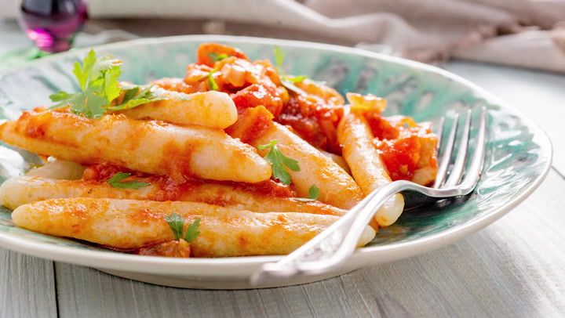

Domplines (Dominican-sytle dumplings)

Description
Dominican domplines (dumplings) are a pasta-like boiled dough cooked in tomato sauce or cheese-based sauces. Very easy and fun to make.
Ingredients
- 1½ teaspoon salt
- 6 tablespoon butter (salted), room-temperature
- 1 cup all-purpose flour, (plus ¼ cup to use as needed)
To boil the domplines
- 1 tablespoon salt
For the cheddar sauce
- 1 cup sharp cheddar, cut into cubes
- ½ red bell pepper, diced
- 1½ cup milk (whole or skim)
- 1 teaspoon salt, or more, to taste
- ½ teaspoon pepper (freshly-cracked, or ground), or more, to taste
To garnish
- 1 tablespoon minced parsley, (optional)
Steps to follow
- Mixing dough: In a large bowl, dissolve the salt in 6 tablespoons of water at room temperature
Add in 1 cup of flour and butter. Mix in with a spatula, the dough may be shaggy, so add extra flour by the tablespoon as needed to be able to knead it
Knead until the dough is smooth and elastic.
- Making domplines: There are several traditional shapes for dumplings.
To make the finger-like domplines, cut small pieces of the dough and roll them (about 3" [7.5 cm] in length and ½" [1.3 cm] in diameter). Set them aside.
To make the flattened domplines make them into balls and flatten them.
Size and shape are a matter of choice.
- Boiling:Heat 1½ qt [1.5 liter] of water with the salt over medium-high heat. Once it breaks the boil. lower the dumplings carefully into the water one by one so they don't stick.
Once they start to float, cook for 5 minutes, stirring often to prevent them from sticking (taste for doneness by splitting one and checking there's no raw flour in the middle).
Remove from the water with a slotted spoon. Serve per suggestions above the recipe, or with the sauce below
How to make the cheese sauce:
- Blend all the ingredients in the food processor or blender.
Heat over medium-low heat in a saucepan, stirring until all the cheese has melted. Add the domplines and stir. If the sauce is a bit too thick, add some of the water the domplines boiled in. If it is too thin, just reduce to your desired consistency (it'll thicken when you remove it from the heat).
Remove from the heat, and sprinkle with parsley before serving.